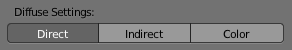

渲染烘焙¶
Refer to the Blender Render page for general baking guidelines
在Cycles中使用渲染设置（采样、反弹、……）进行烘焙。因此烘焙纹理的品质将会和场景的渲染一致。
The baking happens into the respective active textures of the object materials. The active texture is the last selected Image Texture node of the material node tree. That means the active object (or the selected objects, when not baking 'Selected to Active') needs a material, and that material needs at least an Image Texture node, with the image to be used for the baking. Note, the node does not need to be connected to any other node. The active texture is what projection painting and the viewport use as a criteria to which image to use. This way after the baking is done you can automatically preview the baked result in the Texture mode.
选项¶
环境光遮蔽通道。
烘焙模式¶
- 合成结果
Bakes all materials, textures, and lighting except specularity.

Combined Pass Options.
The passes that contribute to the combined pass can be toggled individually to form the final map.
- 环境光遮蔽
- 烘焙世界面板中指定的环境光遮蔽，忽略场景中的其他灯光。
- 阴影
- 烘焙阴影及灯光。
- 法线
烘焙不同空间的法线：

Normal Pass Options.
- 法线空间
Normals can be baked in different spaces:
- Object space
- Normals in object coordinates, independent of object transformation, but dependent on deformation.
- Tangent space
- Normals in tangent space coordinates, independent of object transformation and deformation. This is the default, and the right choice in most cases, since then the normal map can be used for animated objects too.
- Normal Swizzle
- Axis to bake into the red, green and blue channel.
在材质中你也可以选择相同的空间坐标，也就是图像纹理选项中，法线映射设置的下面。为了得到的正确的结果，这里的设置应该和烘焙中的设置相同。
- UV
- 仅烘焙材质的颜色和纹理，不含有着色信息。
- 自发光
- 烘焙自发光，或是材质的辉光颜色。
- 环境光
- 烘焙从物体中心所观察到的环境。
- Diffuse, Glossy, Transmission, Subsurface
Bakes the diffuse, glossiness, transmission of subsurface pass of a material.
Diffuse Pass Options.
- If only color is selected you get the pass color, which is a property of the surface and independent of sampling refinement.
- If color is not selected, you get the direct and/or indirect contributions in grayscale.
- If color and either direct or indirect are selected, you get the direct and/or indirect contributions colored.
附加选项¶
- 边距
- 烘焙的结果将会超出每一个UV块的边界，以此来柔和纹理中的接缝。
- 清空
- 选择该项时，在渲染烘焙前会先清空图像。
- 所选物体>主控物体
- 烘焙所选物体的着色到活动物体。光线会从外面的低模物体投射到内部的高模物体。倘若高模物体没能被低模物体完全包裹，你可以通过调节光线距离或是罩体挤出（取决于你是否使用罩体）来调节光线的起点。对于更多的控制，你可以通过指定罩体物体来实现。
Note
内存用量
There is a CPU fixed memory footprint for every object used to bake from. In order to avoid crashes due to lack of memory, the highpoly objects can be joined before the baking process. The render tiles parameter also influence the memory usage, so the bigger the tile the less overhead you have, but the more memory it will take during baking (either in GPU or CPU).
- 罩体
- Cast rays to active object from a cage. A cage is a ballooned-out version of the lowpoly mesh created either automatically (by adjusting the ray distance) or manually (by specifying an object to use). When not using a cage the rays will conform to the mesh normals. This produces glitches on the edges, but it is a preferable method when baking into planes to avoid the need of adding extra loops around the edges.
- 光线距离
- 在使用所选物体>活动物体时，控制光线向内投射的距离。该项仅在不使用罩体时可用。
- 罩体挤出
- Distance to use for the inward ray cast when using Selected to Active and Cage. The inward rays are casted from a version of the active object with disabled Edge Split Modifiers. Hard splits (e.g. when the Edge Split Modifier is applied) should be avoided because they will lead to non-smooth normals around the edges.
- 罩体
指定作为罩体的物体，以此替代活动物体的罩体挤出
Note
When the base mesh extruded does not give good results, you can create a copy of the base mesh and modify it to use as a Cage. Both meshes need to have the same topology (number of faces and face order).